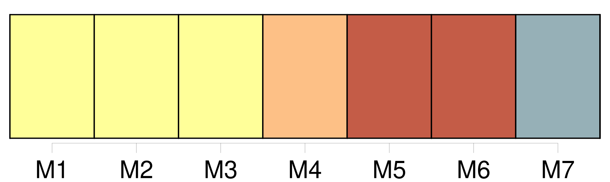
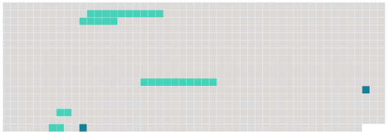

Longueur nb maillons : 7 mentions |
  |
Article R2-3 [10 phrases]
[Le président de la commission prévue à l'article 262] adresse aux services de la police ou de la gendarmerie nationales territorialement compétents la liste des personnes figurant sur la liste préparatoire qui n'ont pas été inscrites sur la liste annuelle du jury d'assises afin que, conformément au 3 ° de l'article 10-5, ces services procèdent, avant le 1er septembre, à la consultation des traitements automatisés prévus à l'article 230-6.
[Il] peut également leur demander de procéder à l'audition de ces personnes, en application du sixième alinéa de cet article. [2 phrases]
Elle exclut en outre provisoirement de cette liste les personnes qui n'ont pas adressé à [son président] le recueil d'informations dans le délai prévu au 1 ° de l'article R. 2-3. [1 phrases] Si, à la suite de cet examen, la liste ne peut être arrêtée, [son président] procède ou [fait] procéder par les services de la police ou de la gendarmerie nationales, conformément au 3 ° de l'article 10-5 et au sixième alinéa de cet article, aux vérifications complémentaires qui apparaissent nécessaires. |
 |
La ressource peut être téléchargée sur la page Ortolang
Si vous avez des questions ou vous voyez des erreurs, merci d'envoyer un mail à silvia.federzoni89@gmail.com
Site développé par S. Federzoni (contact)